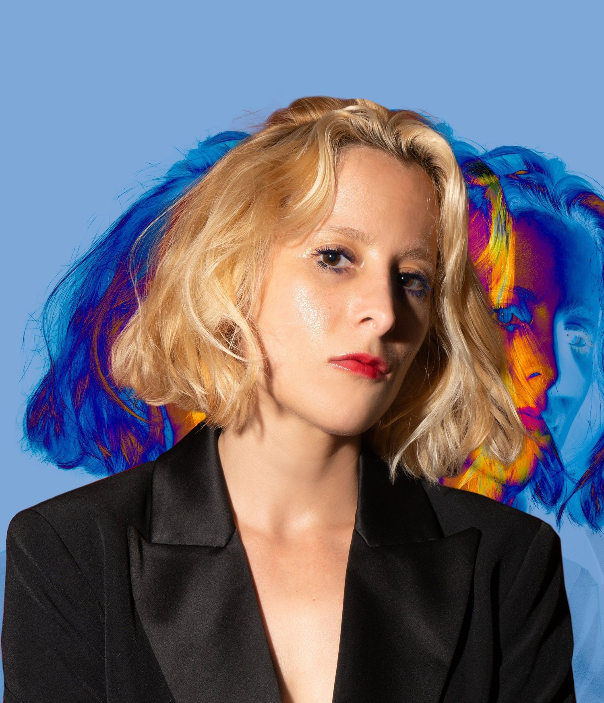
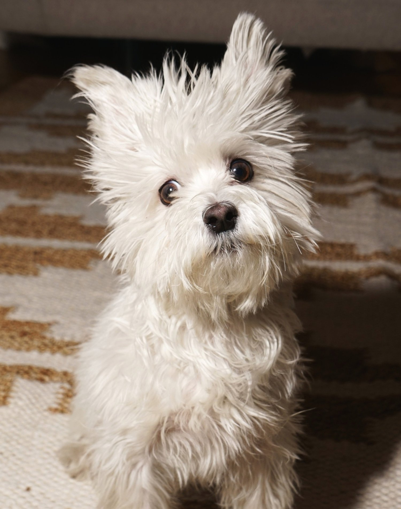

About
I can design anything
With over 10+ years of experience designing end-to-end digital products for startups to big tech, I lead projects through every phase of the product lifecycle—from ideation to launch. Whether working on AI-driven creator tools or music platforms, I solve complex problems with creativity and precision. I collaborate closely with product managers, engineers, and researchers to ensure seamless execution. As a dual citizen, I effortlessly work across both the U.S. and U.K. Currently, I’m shaping cutting-edge tools at Bloomberg, passionate about creating scalable, user-centered experiences across ecosystems. Let’s build something amazing together!
🇬🇧 🇺🇸
Download Resume →
Skills
End-to-End Design:
I deliver world-class interaction designs and systems from concept to final product, managing multiple feature areas simultaneously.
Problem Solving & Design Thinking:
I solve complex design challenges with simple, intuitive solutions that integrate brand personality, visual, motion, and sound elements
Cross-Functional Collaboration:
I work closely with product management, engineering, and research teams to iterate and deliver cohesive, high-impact user experiences
User Research & Prototyping:
I conduct user research, usability testing, and competitive analysis to inform and validate designs. Skilled in creating storyboards, wireframes, user flows, prototypes, and design artifacts
Design Systems:
I develop and maintain design systems and frameworks to ensure consistency across platforms and teams
Communication & Leadership:
I use my strong communication and presentation skills to advocate design solutions aligned with user and business goals, guiding teams and mentoring junior designers
Tools & Technologies:
I know Figma, Adobe Creative Suite, prototyping tools, interaction design frameworks, IOS & Android, Web Apps, Vision Pro, game design, C4D and more
Product Strategy:
I am experienced in product planning, user feedback analysis, and influencing product development through data-driven insights
A few more things

Dual Citizen (UK & US)
I’m a citizen of the US and the UK. I’ve worked in both countries, and frequently hop between both.
My Dog
He’s funny, he’s fluffy, he loves to snuggle. He would follow me off a cliff. He is my 6 lb 4 year old Maltese.

Music
I love writing and producing music. I am also a practicing musician with two albums out on all streaming platforms, currently working on my third album.
Ideation
Ever have that moment when you learn something you never knew existed and you’re like “Wow, this is amazing!” That’s the feeling I’m talking about. It feels like the world is filled with possibilities, and you get a shot of excitement.